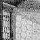

>examine darkness
You can't see the darkness without a light!
>let there be light
Okay, there is light.
>examine the light
It is good.
>divide the light from the darkness
It is so.
>call the light "day" then call the darkness "night"
Called.
Called.
— from a transcript of ‘The Creation’, a game never written but proposed in some of Infocom's surviving documents. (“Estimated development time 8–10 months… shalts and begats and haths.”)
 Sighted people observe whether it's light or dark so instantly that the matter seems self-evident. The Inform library has to use reason instead, and it rechecks this reasoning very frequently, because almost any change in the world model can affect the light:
a total eclipse of the sun;
fusing all the lights in the house;
your lamp going out;
a dwarf stealing it and running away;
dropping a lit match which you were seeing by;
putting your lamp into an opaque box and shutting the lid;
black smoke filling up the glass jar that the lamp is in;
the dwarf with your lamp running back into your now-dark room.
The designer of an Inform game isn't allowed to tell the library “the player is now in darkness”, because this would soon lead to inconsistencies. (If you want it to be dark, ensure that there are no light sources nearby.) Because light is automatically calculated, you can write statements like the following, and leave the library to sort out the consequences:
give lamp light; remove match; give glass_jar ~transparent; move dwarf to Dark_Room;
The light attribute means that an object
is giving off light, or that a room is currently lit, for instance
because it is outdoors in day-time.
•
EXERCISE 40
Abolish darkness altogether, without having to give every location
light.
· · · · ·
When the player is in darkness, the current location
becomes thedark, a special object which behaves like a
room and has the short name “Darkness”. Instead, the
variable real_location always contains the actual room
occupied, regardless of the light level.
The designer can “customise” the darkness
in a game by altering its initial, description
or short_name properties. For example, the Initialise
routine of the game might include:
thedark.short_name = "Creepy, nasty darkness";
See §20 for how ‘Ruins’ makes darkness menacing.
· · · · ·
Light is reconsidered at the start of the game,
after any movement of the player, after any change of player, and at
the end of each turn regardless. The presence or absence of light
affects the Look, Search, LookUnder
and Examine actions, and, since this is a common puzzle,
also the Go action: you can provide a routine called
DarkToDark()
and if you do then it will be called when the player goes from one dark place to another. (It's called just before the room description for the new dark room, normally “Darkness”, is printed). You could then take the opportunity to kill the player off or extract some other forfeit. If you provide no such routine, then the player can move about as freely in the darkness as in the light.
· · · · ·
▲▲ Darkness rules. Here is the full definition of “when there is light”. Remember that the parent of the player object may not be a room: it may be, say, a red car whose parent is a large closed cardboard box whose parent is a room.
transparent, orsupporter, orcontainer which is open, orenterable but not a container.light attribute set, orlight attribute set, oradd_to_scope has light.It may help to note that to “offer light”
is to cast light inward, that is, down the object tree, whereas to
“have light” is to cast light outward, that is, up the
object tree. The library routines IsSeeThrough(obj),
OffersLight(obj) and HasLightSource(obj)
check conditions (2) to (4), returning true or
false as appropriate.
•
EXERCISE 41
How would you design a troll who is afraid of the dark, and needs to
be bribed with a light source… so that the troll will be as
happy with a goldfish bowl containing a fluorescent jellyfish as
he would be with a lamp?
•
REFERENCES
For a DarkToDark routine which discourages wandering about
caves in the dark, see ‘Advent’.
•It is notoriously tricky to handle
the gradual falling of night or a gradual change of visibility.
See §51.